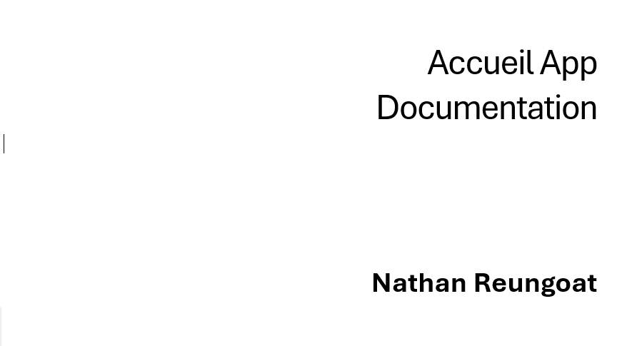

Derniers Ajustements
La Fin ?
Après avoir résolu les derniers problèmes rencontrés, mon maître de stage et moi avons déterminé qu'une solution parmi toutes celles disponibles serait la plus intéressante à long terme. Il m'a donc introduit à "Power Automate", où j'ai pu créer un script qui, dès que le compte lié reçoit un email, récupère son contenu. Dans notre cas, il s'agit d'un JSON contenant les informations suivantes : l'email de la personne visitée, le nom du visiteur et l'entreprise du visiteur.
Après quelques tests infructueux, notamment un incident où j'ai accidentellement envoyé un message à presque tout le monde avant d'être mis en timeout par Power Automate, nous avons finalement réussi à déclencher l'envoi d'un message lorsque le compte reçoit un email avec le bon format. Cependant, jusqu'à présent, nous déclenchions l'envoi manuellement. Nous devons maintenant pouvoir entrer un nom et un prénom, récupérer l'adresse email correspondante et fournir toutes les informations au script.
Pensant qu'il existait déjà une base de données contenant tous les employés et leurs emails, j'attendais des nouvelles de mon maître de stage. Cependant, il m'a informé qu'elle n'existait pas et qu'il fallait la créer.
Il m'a donc suggéré d'utiliser à nouveau Power Automate pour, dans un premier temps, récupérer tous les profils existant sur Microsoft Teams, récupérer leur nom complet et leur adresse email, puis stocker toutes ces informations dans un fichier Excel. Une fois cela fait, nous avons transféré les données de l'Excel dans une base de données SQL grâce à un script Python.
Une fois cette étape terminée, l'autocomplétion fonctionnait et l'envoi des emails était bien opérationnel. Maintenant que le projet est presque fini, je me suis occupé des traductions en anglais et en français, tout en préparant le terrain pour la traduction portugaise que mon maître de stage prendra en charge. Le projet touchant à sa fin, il était temps de s'atteler à la documentation technique.
N'ayant jamais rédigé de véritable documentation technique, mon maître de stage m'a partagé plusieurs exemples pour que je m'en inspire. Vendredi, j'avais presque terminé. Il ne me reste plus que la correction grammaticale, et ce sera bon.
